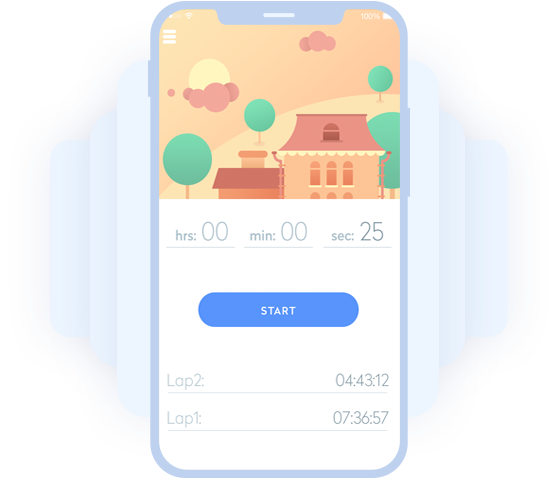
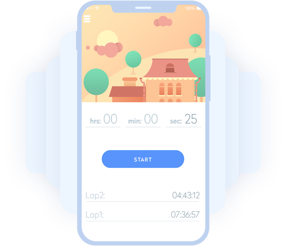

Manage your entire dynamic attack surface
with total ease and confidence
¿Have you ever felt the fear of missing out something
from your attack surface area?
You are not alone
Every CIO, CTO, CISO and member of a cyber security team has felt the same way.
They do an excellent work, however:
Dentists Are Smiling Over Painless Veneer Alternative
There are many simple beauty tips that don’t have to take up a lot of time. These simple tips can be accomplished
in a matter of minutes and can have a noticeable improvement on your appearance. These beauty tips include
simple suggestions such as getting enough sleep each night, drinking plenty of water each day and completely
removing your makeup each night.
Dentists Are Smiling Over Painless Veneer Alternative
There are many simple beauty tips that don’t have to take up a lot of time. These simple tips can be accomplished
in a matter of minutes and can have a noticeable improvement on your appearance. These beauty tips include
simple suggestions such as getting enough sleep each night, drinking plenty of water each day and completely
removing your makeup each night.
 
